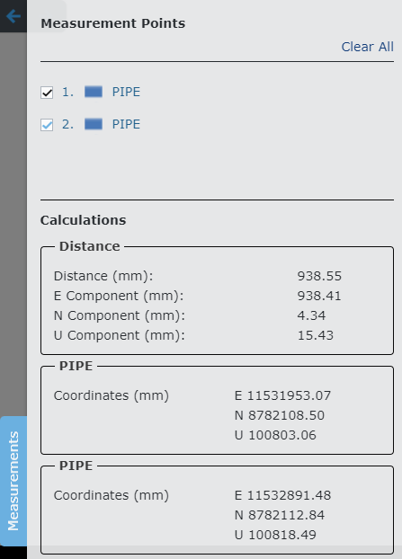

测量点
查看器测量模式允许您放置测量点。

如果您想要测量两个资产之间的距离/间隙或者想要获取资产的高程，则测量点非常有用。您可以放置多个测量点。在测量模式下，（左）单击资产上的一个点。观察者放置测量标记。
您可以放置多个测量点，测量标记将按顺序编号。
测量点详细信息显示在查看器右侧的测量滑出面板中。单击“测量”选项卡可隐藏或显示滑出部分。
您还可以将测量滑出配置为在放置第一个测量时自动展开。请参阅“UI 首选项”表单上的“自动启用展开”首选项。 |
单击测量点可查看测量详细信息（坐标）。

| 单击缩放图标可缩放到查看器中的测量点。 |
选择 2 个测量点以查看这 2 个点之间的距离。

单击右上角的“全部清除”链接可从查看器中删除所有测量标记并关闭测量滑出窗口。